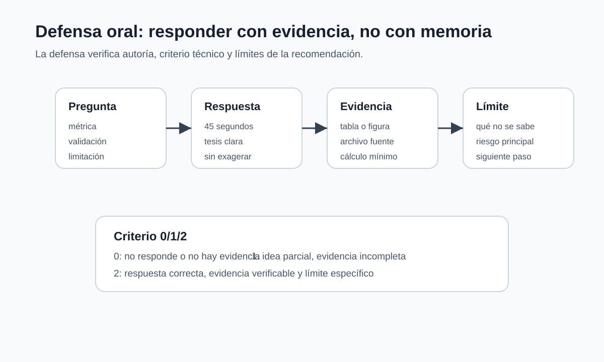

Auditoría y defensa de una conclusión
Del repositorio ejecutable a una explicación verificable
¿Qué debe conservar un análisis para que pueda leerse, ejecutarse, auditarse y defenderse sin depender de una explicación informal? El paquete que lo acompaña debe permitir tres acciones:
- leer la conclusión;
- ejecutar o auditar el flujo principal;
- localizar quién produjo cada artefacto y qué decisión técnica lo originó.
La estructura de archivos y la explicación oral cumplen funciones complementarias. La primera conserva datos, código y resultados. La segunda permite comprobar si la conclusión se entiende y si sus límites pueden defenderse con objetos verificables.
Fundamento probabilístico de la conclusión
Una explicación técnica debe poder responder, con notación y datos del análisis:
- ¿cuál es la población o distribución de uso \(P_{\mathrm{uso}}\)?;
- ¿qué mecanismo produjo la muestra y qué dependencias existen?;
- ¿qué objeto poblacional aproxima el modelo?;
- ¿qué riesgo o métrica empírica se calculó y sobre qué partición?;
- ¿qué variación tiene la cifra principal y cómo se estimó?;
- ¿qué cambio de distribución invalidaría la recomendación?
Una respuesta que solo describe una función de biblioteca no explica el fundamento matemático del análisis.
La cadena de una afirmación
Consideremos la afirmación “el modelo reduce el error en la población de uso”. Su soporte no es una única cifra, sino una cadena de objetos:
\[ P_{\mathrm{uso}} \longrightarrow T(P_{\mathrm{uso}}) \longrightarrow D_n \xrightarrow{\ A\ } \widehat f \longrightarrow \widehat R_{\mathrm{prueba}}(\widehat f). \]
Aquí, \(T(P_{\mathrm{uso}})\) denota la cantidad poblacional de interés, \(D_n\) la muestra observada, \(A\) el procedimiento completo de ajuste y selección, \(\widehat f\) el modelo resultante y \(\widehat R_{\mathrm{prueba}}(\widehat f)\) la estimación final de su desempeño. El procedimiento \(A\) incluye las transformaciones, la selección de hiperparámetros y del umbral, y no solamente la llamada que ajusta el modelo.
Cada flecha requiere una justificación diferente. El diseño de observación conecta \(P_{\mathrm{uso}}\) con \(D_n\); el código conecta \(D_n\) con \(\widehat f\); y el protocolo de evaluación conecta el modelo con la métrica reportada. Reproducir la última cifra verifica la ejecución de una cadena ya especificada, pero no demuestra que la primera flecha represente bien la población. Del mismo modo, una muestra pertinente no compensa un procedimiento que haya usado el conjunto de prueba para seleccionar el modelo.
| Afirmación | Soporte directo | Lo que todavía no demuestra |
|---|---|---|
| el cálculo es reproducible | entorno, código, semilla y hashes | estabilidad con otra muestra |
| el procedimiento mejora una referencia | comparación en la misma partición | mejora en toda población futura |
| la métrica de prueba es válida | protocolo fijado antes de consultar prueba | ausencia de cambio de distribución |
| un segmento presenta una caída | conteos y métrica por segmento | causa de la caída |
| una recomendación es proporcional | costo declarado y límite de uso | efecto causal de adoptar el sistema |
Esta descomposición también orienta la explicación oral. Ante una pregunta, no basta con abrir el archivo más cercano: debe localizarse qué eslabón de la cadena respalda y qué parte de la afirmación permanece bajo un supuesto.
Estructura de un repositorio auditable
analisis/
README.md
requirements.txt
data/
README.md
notebooks/
01_exploracion.ipynb
02_modelado.ipynb
03_reporte_final.ipynb
src/
features.py
evaluation.py
reports/
reporte_final.pdf
artifacts/
metrics.json
manifest.jsonNo todos los análisis tendrán exactamente la misma estructura, pero sí deben separar datos, código, resultados y reporte.
Criterio de ejecución
Un análisis no es reproducible porque “corre en mi computador”. Lo es cuando otra persona puede reconstruir el resultado principal con instrucciones mínimas. El README debe responder:
| Pregunta | Archivo o respuesta esperada |
|---|---|
| ¿qué problema estudia? | formulación y alcance |
| ¿qué datos usa? | fuente, licencia, columnas y restricciones |
| ¿cómo se ejecuta? | comandos o notebooks en orden |
| ¿qué resultado debe aparecer? | métrica, tabla o figura esperada |
| ¿qué no se publica? | datos privados, credenciales o archivos sensibles |
Si el notebook final depende de rutas locales, celdas ejecutadas fuera de orden o archivos no incluidos, la auditoría se vuelve una explicación informal. El paquete debe eliminar esa fragilidad antes de compartirse.
Ejemplo resuelto: contribución individual
Respuesta vaga:
Ayudé con el modelo.
Respuesta verificable:
Implementé la partición de entrenamiento, validación y prueba; construí la regresión logística de referencia y comparé F1 y recall con el modelo regularizado. También preparé la tabla de errores por segmento de edad y documenté el riesgo de falsos negativos.
La segunda respuesta permite verificar autoría y comprensión.
Defensa oral
La defensa no repite el reporte. Lo somete a preguntas y conecta cada respuesta con un archivo, una tabla, una figura o un cálculo. Una explicación fuerte no empieza con “se hicieron varias pruebas”; empieza con una afirmación precisa, localiza su soporte y declara un límite.

Preguntas típicas:
- ¿Cuál fue la contribución técnica concreta?
- ¿Por qué esa métrica es la correcta?
- ¿Dónde falla el modelo?
- ¿Qué parte de la tubería podría producir filtración de información?
- ¿Qué resultado haría cambiar la conclusión?
- ¿Qué conclusión no puede afirmarse con estos datos?
Criterios de una defensa verificable
| Criterio | Pregunta | Soporte esperado |
|---|---|---|
| autoría | ¿quién produjo o modificó este resultado? | archivo, función, historial o artefacto identificable |
| fundamento matemático | ¿qué cantidad se calculó y por qué? | definición, derivación o cálculo |
| validación | ¿qué comparación sostiene la conclusión? | métrica, referencia, partición y errores |
| reproducibilidad | ¿qué corrida produjo el resultado? | entorno, semilla, manifiesto y artefacto |
| alcance | ¿dónde dejaría de ser válida la conclusión? | límite específico de datos, población o uso |
Defensa del clasificador sintético
Para explicar el caso clasificacion_binaria_sintetica.csv, conviene preparar una tabla de archivos antes de hablar:
| Pregunta posible | Archivo o resultado que permite responder |
|---|---|
| ¿por qué esa métrica? | costo de falsos positivos/falsos negativos y regla de referencia |
| ¿dónde falla? | matriz de confusión y tabla por segmento |
| ¿hay filtración? | tubería y partición |
| ¿cuál fue la contribución? | commit, notebook, función o tabla verificable |
| ¿qué no puede afirmarse? | límite sobre el segmento reciente |
Una defensa de 45 segundos:
Mi contribución fue construir la tubería de evaluación y la tabla por segmento.
El modelo regularizado mejora la regla de referencia en F1, pero el recall cae en
el segmento reciente. Por eso no recomiendo su uso automático; propongo
mantenerlo como referencia y crear una validación temporal antes de tomar decisiones.Comprobaciones de la explicación
- “Ayudé con el modelo” no prueba autoría; “implementé la partición y la tabla por segmento en el archivo X” sí es verificable.
- Una defensa fuerte puede reconocer que el resultado no basta para recomendar el uso.
- Una explicación es auditable cuando cada afirmación tiene un soporte observable.
Ejemplo resuelto: pregunta difícil
Pregunta:
Si el modelo tiene mejor F1, ¿por qué no se recomienda usarlo?
Respuesta precisa:
Porque la mejora global no se mantiene en el segmento reciente. La tabla por
segmento muestra una caída de recall, y ese segmento se parece más a la población
de uso. Conviene mantener el modelo como referencia interna y construir una
validación temporal antes de recomendarlo.La respuesta es completa porque no niega la mejora; la ubica dentro de su límite y propone una acción técnica.
Matriz de soporte
Cada respuesta debe poder localizar un soporte concreto:
| Pregunta | Soporte mínimo |
|---|---|
| ¿cuál fue la contribución? | archivo, función, notebook, tabla o commit |
| ¿qué fórmula o métrica usaste? | definición y razón aplicada |
| ¿qué referencia se superó? | tabla comparativa |
| ¿dónde falla el modelo? | matriz de confusión, residuales o segmento |
| ¿cómo se evita la filtración? | partición y tubería |
| ¿qué no puede concluirse? | limitación específica |
En un trabajo colaborativo, la autoría de una parte puede ser compartida, pero la trazabilidad no debe perderse. El historial de versiones, los archivos y el manifiesto permiten distinguir contribuciones sin fragmentar artificialmente el argumento.
Contribución individual y trazabilidad
La defensa debe apoyarse en archivos concretos. Una respuesta fuerte no dice solamente “yo hice el modelo”; señala el archivo, la función, el commit, la tabla o la figura que prueba la contribución. Esta trazabilidad evita dos problemas frecuentes: comprender una conclusión sin poder localizar su soporte y presentar artefactos sin poder defender las decisiones técnicas que los produjeron.
Una forma simple de prepararse es construir una tabla con tres columnas: pregunta posible, archivo que abriría y respuesta de 30 segundos. Por ejemplo, si la pregunta es “¿cómo evitaron la filtración?”, el soporte puede ser la tubería de preprocesamiento y la partición; la respuesta debe explicar qué pasos se ajustaron solo con entrenamiento y cuáles se aplicaron después a validación o prueba. Esta preparación reduce la ambigüedad de la explicación.
Auditoría por contradicción
Una auditoría no solo intenta reproducir el resultado; también busca condiciones bajo las cuales dejaría de sostenerse. Cuatro perturbaciones responden preguntas distintas:
- ejecutar el mismo código en un entorno limpio examina reproducibilidad computacional;
- repetir la partición o remuestrear unidades independientes examina sensibilidad muestral;
- evaluar otro periodo o fuente examina transporte entre distribuciones;
- variar un costo o umbral declarado examina sensibilidad de la regla de acción.
Si una conclusión cambia bajo la primera perturbación, falta trazabilidad. Si cambia bajo la segunda, la cifra es inestable. Si falla en la tercera, el problema es de población o distribución de uso. Si cambia en la cuarta, el modelo puede ser el mismo mientras cambia la acción recomendada. Agrupar estas fallas bajo la frase “el modelo no funciona” oculta qué parte del análisis debe corregirse.
Síntesis
Un análisis debe ser auditable. El repositorio, el reporte, los artefactos y la defensa deben permitir reconstruir qué se hizo, quién lo hizo, qué resultado se obtuvo y qué conclusión se puede sostener.
La defensa individual no repite la presentación grupal. Su función es verificar criterio técnico: contribución concreta, elección de métrica, prevención de filtración, lectura de errores, limitaciones y siguiente experimento razonable.
La trazabilidad une la explicación con sus soportes. Una afirmación oral puede ser clara y, aun así, no ser verificable; un repositorio puede ser ejecutable y, aun así, no explicar por qué se eligió una métrica. La defensa completa requiere ambas partes.
Problemas
¿Por qué una defensa oral no debe repetir simplemente la presentación?
¿Qué archivo o resultado distingue una contribución concreta de una afirmación vaga?
Cree una estructura de carpetas para un análisis y liste qué archivo sostiene cada resultado importante.
Prepare una tabla de contribuciones con tarea, soporte y responsable.
Anticipe una pregunta sobre pérdida, métrica o validación y prepare una respuesta con una fórmula o cálculo breve.
Ejecute el análisis en un entorno limpio y registre cualquier dependencia faltante.
Escriba una respuesta precisa a: “¿Qué resultado haría cambiar la conclusión?”.
Construya una matriz de doce comprobaciones para auditar el paquete antes de compartirlo.